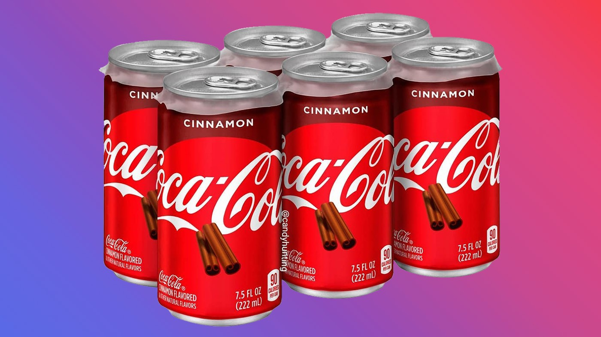

Давайте почитаем отзывы об этом напитке на первом сайте в интернете!Кока Кола Cinnamon с корицей: всё те же волшебные пузырьки, но радуют меньше.Делаем вывод что такой напиток уже надоел) Прочитаем следующий отзыв:Ничего нет лучше обычной колы. Сколько пробовала с добавками. Ванильная ещё сойдёт. А лучше вообще не увлекаться газированными напитками)